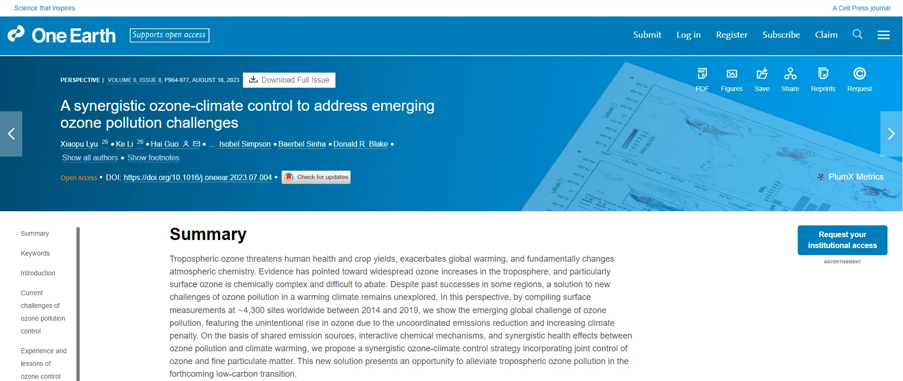

29/8/2023
-
Recently, a research team composed of 30 scholars from 10 countries around the world led by Hong Kong Baptist University, Hong Kong Polytechnic University, Nanjing University of Information Science and Technology and Queensland University of Technology published a perspective article 'A synergistic ozone- Climate Control to Address Emerging Ozone Pollution Challenges' in One Earth, a sister journal of Cell. The article proposes a climate-coordinated ozone pollution control strategy to address the longstanding environmental threat of ground-level ozone pollution.
-
Dr. Lyu Xiaopu of Hong Kong Baptist University and Professor Li Ke of Nanjing University of Information Science and Technology are the co-first authors of the paper; Professor Guo Hai of Hong Kong Polytechnic University and Professor Lidia Morawska of Queensland University of Technology are the corresponding authors of the paper.
Read More
